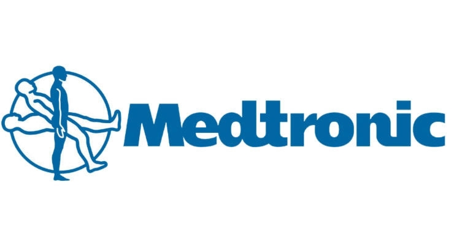
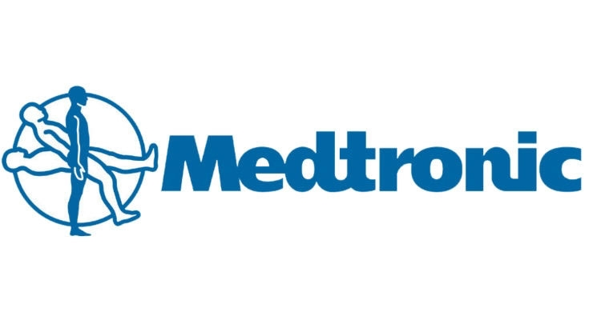

Lesli Valladares EScobar
At the naive age of fourteen I knew that I wanted to become an attorney. At the age of 15 I set my mind on medicine and at the age of 17 I knew that the law is my passion. Coming From personal experiences with immigration from my family and community, I knew that I had to help my community and my family. Having the opportunity to view many different political views on immigaration only encouraged me. As a minority I know what it is like to be oppressed and suffer. This only encouraged me even more to fulfill what is my ultimate goal. Political Science is the beginning to my future career as an immigartion attorney. Besides Immigartion I have always cared for civil rights and i believe that I may also help in family law, despites its emotional stance. I consider myself a humanitarian who is willing to help each and everyone who needs aid. Coming from a low-income family, who for most of my life only consisted of my grandmother, mother and myself, I learned to always empathize, be humble and be appreciative of what I am given, because I know that others struggle more than me. Since a young age I knew that it was my duty to help my community, and I plan to complete it and help as many people as possible. I have two dogs, one chihuahua and another toy poodle both are females. The chihuahua's name is princess and she is one human year old and the toy poodle is shakira and she is about eight to nine human years old. I also have a brother and a sister, they are both my half siblings and younger than me. My sister is almost nine years old and my brother is five years old. Between my sister and I we have a ten year gap and between my brother and I, we have a thirteen year gap. My mom had me at a really young age and so when she met my stepfather, she was in her thirties already. From my moms side of the family. I am the oldest grandchild, but from my father's side, I am the youngest.I am eighteen years old and of Haspanic/Latina ethnicity, specially from the tiny country of El Salvador. A fun fact about me is that I share birthdays with my grandma from my moms side of the family. We were both born in January thirtieth, but of course with different years. I have studied from kindergarten to twelfth grade in the City of Tustin in the county Orange, basically my whole life. Another fun fact is that my second last name is Escobar, similar to the notorious drug-lord Pablo Escobar, but I am not columbian and neither are my parents, I do have a relative that lives in Columbia, but I do not have ties to the drug lord. My current goals are to become an immigration lawyer and I help my community.
I have volunteered for the Rescue Mission, specifically the Village of Hope in Tustin, California, where I have helped the community harvest and become better versions of themselves. At the Village of Hope, I volunteer at the PC which is known as childcare for the kids who live at the shelter. Since I volunteer on Saturday nights, while the kids are on PC their parents are at Bible Studies. Since I work with the enfants I am able to learn many responsibilities, such as being patient and more careful. I was also able to learn how to be more appreciative of the life I have, even though I do not have much or many of the luxuries others get to enjoy. I at least have the necessities I need, many of the people at the rescue mission do not have a stable home or job. I have been told how much they appreciate having volunteers, especially teenagers like me who they can advise and teach me to not make the same mistakes they’ve made. Volunteering at the Village of Hope has made me mature and grow as an adult. Every time I go, I am able to help the enfants learn how to walk and how to share with each other. Thanks to my contribution, many of the people at the shelter have been able to progress in the program smoothly and have been able to graduate on time, the graduation which signifies that they have changed for the better with a stable life. I babysat both infants and toddler. I would play with them and read them stories. I would help after finishing and clean up everything after the kids were picked up. I also helped in the donation drive, one specific memory I have was when I invited my best friend to help sort out donations for the people whose homes burned down due to the fire at the Chatham Village Apartments and we sorted out all the clothes, shoes, accessories, etc. There were a lot of people who helped during this event and I was very grateful to help, because we had students from all over the Tustin District who lost their homes because of this fire. I was very glad to be able to help my fellow classmates and peers who did lose their homes regain some necessities. I also participated in The Greendog Foundation where I encouraged people to adopt dogs. I joined this program because of my high school. It was their first year hosting it, but due to the pandemic only about two events were held and they were somewhat successful. I have been volunteering at The Rescue Mission, Village of Hope since January of two thousand and nineteen but I stopped volunteering due to the pandemic, but I hope to continue next year as long as it's safe enough for the infants and toddlers. Both volunteer activities were very important to me because they were two things I am very passionate about.
My work experience consists of only one job. I worked for a company called Medtronics, where we assembled medical devices. My specific location focused on medical devices that helped with aneurysms, strokes, and Arteriovenous Malformations. Each neurovascular issue had their own products, for aneurysms we used coils and pipeline flex, for Arteriovenous Malformations we used Onyx and for Strokes we used solitaire products. Each day we had a goal, we had to make as many possible and they were to be produced with the best quality. Quantity and Quality was heavily praised. Needing to work efficiently and still meet the company’s expectations. I specifically worked in Axium, Pusher one and operation 230. I focused on the inspection of the marker coil and the tip of the pusher. I would first receive a new order and sign all the paperwork, but needed to make sure all the labels that the equipment I had was up to date. Once finished with the inspection I would then insert the tool and then place it onto the side where once I finished a batch, I would then heat them. After heating them, I would end my lot, finish the number count and place them in a box where they would then go to the “inspector”. This job required dme to work a consistent eight hour job, at times you would be asked to stay overtime for two to four more hours. Having to take two breaks and one lunch, and overtime about two lunches and more breaks. Due to the lack of experience I do not have much to write about, But I will mention my friendships and bonds I created despite being the youngest. I, being the only eighteen year old did not have friends my age, except for one girl named Mariam, she was very nice and chill. Another friend was Alexis who was twenty-three years old, him and Miraiam were the only ones in my age range. My other friends who were my group were this young lady named Maria and she is twenty-five years old. Another was Miko who is twenty-six years old, he left the company in the middle of august If I remember correctly, but he was a very cool “millenial” although most of the time he acted like he was a baby-boomer because he did not know a lot of “modern” things. The other was Thé, he is vietnamiese and he was one of the nicest persons I have ever met, he was also twenty-six years old and he also left the company in the ending of July because he was going back to college and he was studying at Cal Poly Pomona, I mentioned to him that it was really funny because I was also accepted there and was thinking about going there but decided against it. Of course, there were other people like Marleny and Tracy, who were older ladies. Also Minh and Naan and Quin who were all very kind, helpful, older and experienced.
Experience
Assembler 1
• Worked in Production
• Can operate various types of tools and microcopes
• Experience with Assembly line
Village of Hope Volunteer
• Helped in Donation Drive
• Helped in Graduation PCE
• Helped in PCE for Infants
• Helped in PCE for Toddlers
Education
University of California Riverside
Portfolio

.jpeg)

